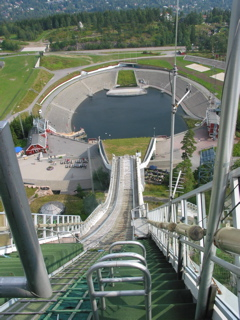

After a bit of recovery from the train ride (Though trains seem to be many times more comfortable than airplanes, its still hard to sleep in a moving chair.) we checked out the Vigeland Sculpture Park.

Then we checked out the Holmenkollen Ski Jump. This was used for the 1952 Winter Olympics, but they’ve rebuilt it to be bigger since. Since there is a combination of an elevator and stairs to the top where you can look out, we climbed up. The view from up there was pretty neat, but all the top was closed up fairly tight. (the air in that tiny room up there tasted funny.)
Erling’s parents had invited us all over for supper, so we headed out to their place then and